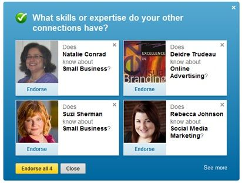
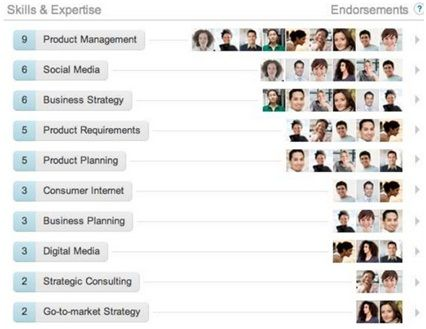

Answers
How do you like LinkedIn’s endorse feature?
CANDIDATE: When I evaluate whether or not I like a feature, I think about three design principles:
I’ll use those principles to evaluate LinkedIn’s endorse feature.

Since I don’t recall the feature details, I will start by reviewing how the feature works. The endorse feature appears on different parts of the site.
On your profile page
There’s a pop-up at the top of the page asking you to endorse skills of four people you know.
LinkedIn offers suggestions for endorsements. You can endorse each person individually, or you can easily endorse everyone by clicking a single button.
On someone else’s profile page
Here we are at Matt’s profile page. It focuses on suggestions for Matt alone, not four different people. There are a few suggestions —with the ability to add or subtract endorsement. Suggested endorsements could be added to Matt’s profile with a single click of the yellow “Endorse” button, provided that Matt accepts them.

All endorsements appear at the bottom of a user’s profile page. On the left, you’ll see how many have endorsed a particular skill. On the right, you’ll find photos for those who gave the endorsement.
| Pros | Cons | |
|---|---|---|
| Innovative | Is a clever way to get more profile data | May not produce quality data |
| Useful | Adds more information about the individual Identifies probable expertise areas | Has categories that don’t include details or examples |
| Honest | Provides wisdom of the crowds | Lacks way to verify what is actually true |
The feature is innovative though it has issues. I find it a clever way to get more profile data. It’s an easy one-click process. And the endorsee will be compelled to return the favor to the endorser, creating a growing cycle of more endorsement data.
But the data quality is suspect. On the one hand, LinkedIn doesn’t allow strangers to endorse one another. But still, who knows if the endorser is qualified to evaluate a person’s expertise?
The feature meets my usefulness criteria. LinkedIn wants people to find the site valuable and worth spending time on. Users are more likely to spend time on it if there’s more quality data to peruse. The data also has two additional benefits to LinkedIn. First, LinkedIn can create new products based on rich data. Second, for a competitor to lure the LinkedIn user, it would take a lot of time to recreate all the value that already exists on LinkedIn. The down side is that these endorsements don’t include examples or details of a person’s expertise. For example, if someone is endorsed as an expert in web design, I’d like to see a link to his or her design portfolio.
The third and final criteria for me, is this feature honest? I have mixed feelings about that. On the one hand, it leverages the wisdom of the crowds. On the other hand, there’s a heavy sampling bias. Friends are more likely to endorse each other than people with other types, or no, relationships. Also, endorsed users feel compelled to return the favor, possibly voting up connections that shouldn’t have been voted up in the first place.
Comments: The candidate does a good job stating his evaluation criteria and then thoughtfully evaluated the feature based on those criteria.
Walking through, either in writing or vocally, the way the feature works may seem unnecessary. However, most candidates overestimate their knowledge of a particular product. They assume they know how it works, only to be challenged by the interviewer later when the feature doesn’t work that way. By methodically walking through the product before critiquing it, the candidate takes the opportunity of being on the same page as the interviewer before moving forward.
Tell me about a product you like and use frequently. Why do you like it?
CANDIDATE: My favorite product is my iPhone. When I think about why it’s my favorite, it comes down to three key design questions:
In terms of utility, there’s no other device that I use as much as my iPhone. It’s a personal communication device that allows me to browse the web and listen to music. Excluding eating and breathing, it meets or helps meet most of my life needs including getting stuff done and connecting with friends and family.
It’s a very innovative product. Before the iPhone, the BlackBerry dominated. BlackBerries were effective for emailing, but they were limited when browsing the web. And there were few apps. Remember checking sports scores on a WAP-enabled (wireless application protocol) ESPN site? It seems archaic compared with what we have now. We’ve come a long way, and the iPhone gets most of the credit for starting the revolution.
Finally, the product is easy to use and understand. There are few buttons —just the ones that are critical and obvious: on/off, ringer mute, and volume controls. Perhaps the only non-obvious button is the home button, but fortunately, that button is easy to figure out.
Navigation is simple. Just use your finger. And it fits cleanly with pre-existing mental models. You scroll through pictures as if you’re flipping through a photo album.
To recap, I like the iPhone because it meets my three criteria for great products. It’s useful, innovative and easy to understand.
Comments: The candidate answers the question honestly. He makes it easy for the interviewer to evaluate the response since the candidate specified criteria. The candidate also backed up his comments with evidence and compared the iPhone with peer products. The response could have been more memorable if the candidate chose a unique product.